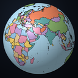

How the globe puts labels on a sphere
A flat map can print a name once and forget it. On a globe the same name has to bend with the surface, give way to its neighbours and stay readable while everything turns.
A flat map can print a name once and forget it. On a globe the same name has to bend with the surface, give way to its neighbours and stay readable while everything turns.

Terrella draws tens of thousands of names: countries, cities, rivers, ranges, seas. At any moment only a small share of them fit. Which ones, where, and in what shape — that is most of what makes a map look like a map rather than a scatter of words.
A river name is not placed at a point. It runs along the river, letter by letter, and each letter is turned to match the bend under it. The same goes for mountain ranges and long seas. Imhof's rules for lettering were written for paper, and most of them hold on a sphere.

Two names that overlap cannot both stay. The rule is a ranking, not a timer: a capital beats a town, a long river beats a short one, and a name that is already on screen keeps its place a little longer so the map does not flicker as you pan.

The full write-up of the rules, with the sources they come from, is in the project notes. Next time: how the hypsometric colours were chosen.
